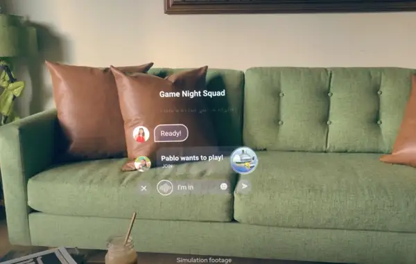

Dispositivos con los que accederás al Metaverso de Zuckerberg¶
El casco de realidad virtual Cambria llegará en 2022 y las gafas de realidad aumentada Nazare aún no tienen fecha. Cambria, nombre en clave del proyecto, es un casco de realidad virtual (RV) que llegará en 2022. Sucede a otro dispositivo de Facebook bien conocido por los seguidores de la RV, Oculus Quest 2, y mantiene la compatibilidad pero será “un nuevo y avanzado producto de alta gama” distinto a Oculus, según explicó Zuckerberg.
Dipositivos electrónicos a usar¶
El cambio de nombre de Facebook por Meta fue la noticia principal del Connect 2021 de la semana pasada, pero hubo otras revelaciones importantes que pasaron desapercibidas. Entre ellas, los dispositivos que serán necesarios para acceder e interactuar con la propuesta de mundos virtuales de Zuckerberg. Hablamos del Proyecto Cambria y Nazare Glasses.
Cambria, nombre en clave del proyecto, es un casco de realidad virtual (RV)
Nazare Glasses, nombre en clave para gafas de realidad aumentada
Con Cambria el usuario podrá acceder a los tres espacios o entornos dentro del metaverso que presentó Zuckerberg y para lo que necesitará, además del casco de realidad virtual, una cuenta de Facebook. Horizon Home es algo así como un primer nivel, una recreación virtual del hogar del usuario u otro entorno donde puede realizar vida social e interactuar con más avatares y con “apps”. Horizon Worlds es otro nivel dotado de herramientas con las que cualquiera, no solo empresas, podrá crear nuevos mundos y desarrollar todo tipo de juegos y actividades. Por último, Horizon Workspaces será el espacio para trabajar.
Cambria no solo proporcionará experiencias de realidad virtual (mundos completamente virtuales) sino también de realidad mixta recreando en la pantalla el entorno real del portador mediante sensores y con la ayuda de algoritmos de reconstrucción. Se vio, por ejemplo, a un usuario trabajando en un escritorio frente a una serie de pantallas virtuales con las que interactúa y bajando la vista para ver a su mano tomar notas en un cuaderno de la misma forma que lo está haciendo en la realidad en ese momento, pero es una recreación en la pantalla de Cambria. Para conseguirlo ha sido necesario introducir un gran número de sensores en un dispositivo que debe ser cómodo de usar durante ratos prolongados. El casco de realidad virtual también hará uso de una nueva óptica que Meta denomina “compacta”, cuyas lentes “doblan la luz varias veces para conseguir un perfil más delgado que las lentes actuales” según se explicó en el evento.
Pero Cambria sería solo un paso hacia el objetivo, más ambicioso, de “verdaderas gafas de realidad aumentada”. Y esto serán las Nazare Glasses con las que el usuario puede ver su entorno real e interactuar con elementos virtuales superpuestos sobre la realidad. La tecnología incluirá “pantallas de hologramas, proyectores, baterías, radios, chips de silicio personalizados, cámaras, altavoces, sensores para mapear el entorno y más en gafas con cinco milímetros de grosor”, explicó Zuckerberg.